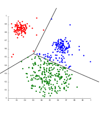
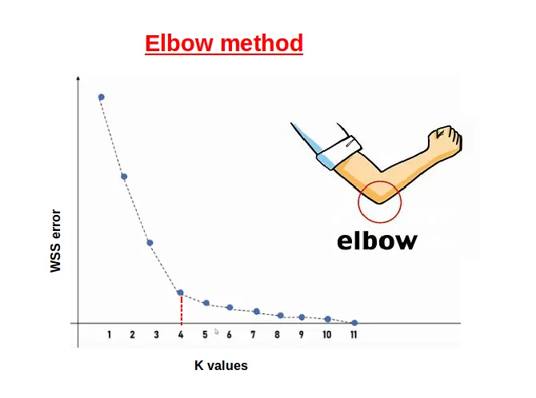
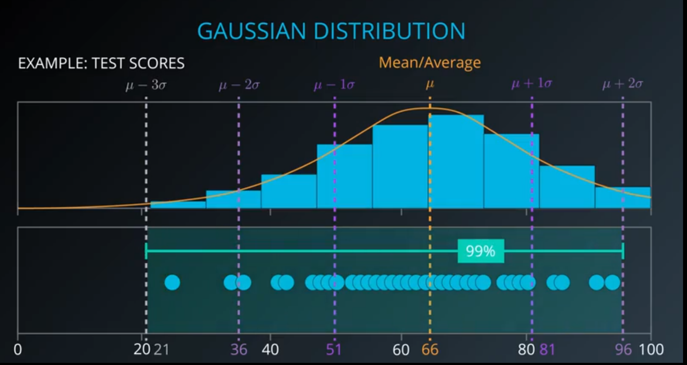
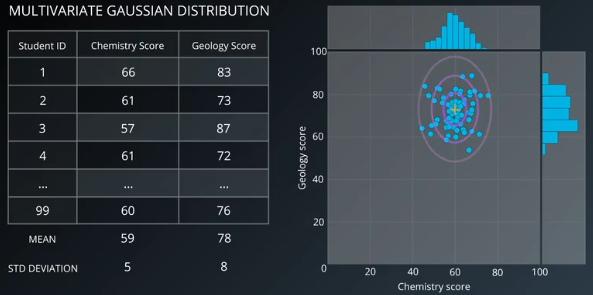
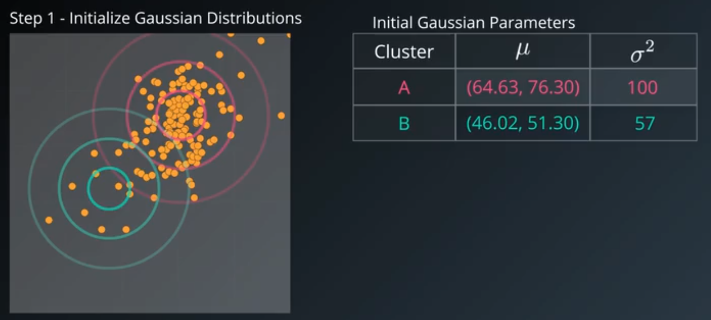
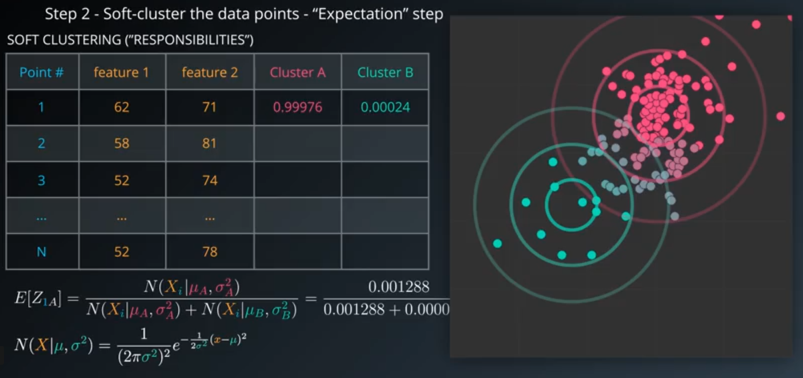
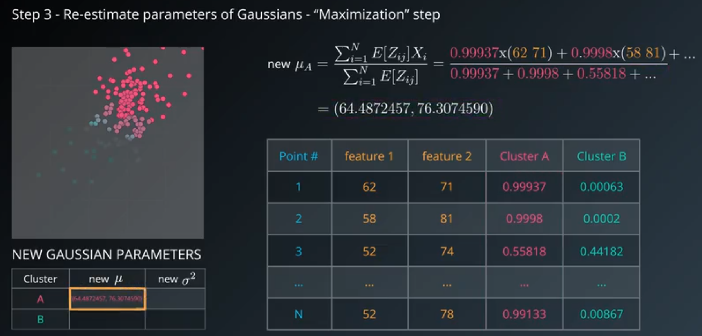
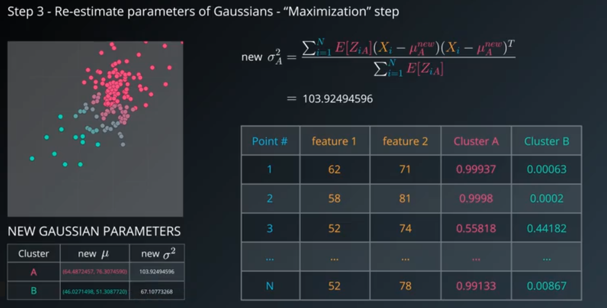

聚类算法及数据处理系统的设计与实现¶
以混合算法GMM与K-Means算法为例，了解聚合算法，以及对数据处理系统的相关设计与处理。
聚类算法¶
聚类是一种无监督的机器学习算法，可根据相似性或模式将不同的对象、数据点或观察结果组织和分类为不同的组或聚类。
按照某一个特定的标准将一个数据集分割成不同的类或者簇，使得同一个簇内的数据对象的特征相似度尽可能大，同时不在一个簇中的数据对象的差异性也尽可能大。
如图，聚类将下面的数据分为三类，以不同的颜色标出：

主流聚类算法：
- 划分聚类（Partitioning Clustering）
划分聚类算法会给出一系列扁平结构的簇（分开的几个类），他们之间没有任何显式的结构来表明彼此的相关性。 常见的算法有：K-Means/K-Medoids、Gaussian Mixture Model（高斯混合模型）、Spectral Clustering（谱聚类）、Centroid-based Clustering
- 层次聚类（Hierarchical Clustering）
层次聚类会输出一个具有层次结构的簇集合，因此能够比划分聚类输出的无结构簇集合提供更丰富的信息。层次聚类可以认为是是嵌套的划分聚类。 常见的算法有：Single-linkage、Complete-linkage、Connectivity-based Clustering等。
K-means算法¶
K-means(k均值)算法是聚类算法中一个非常基础的算法，同时应用也十分广泛。
核心概念¶
聚类算法要把\(n\)个数据点按照分布分成\(K\)类（很多算法的K是人为提前设定的）。我们希望通过聚类算法，而得到\(K\)个中心点，以及每个数据点属于哪个中心点的范围内。 - 中心点可以通过迭代算法来找到，满足条件：所有的数据点到聚类中心的距离之和是最小的。 - 中心点确定后，每个数据点属于离它最近的中心点。
要解决的几个前置小问题
1.数据点到中心点的距离如何计算？
一般选择几何距离，L2距离的平方。
L2距离即欧几里得距离
2.中心点是否唯一，也就是说是否存在全局唯一最优解？
对于多个中心点的情况，全局最优是一个相当难的问题。理论上存在一个全局最优解，但是不一定能找到。既然全局最优解不好找，那我们退而求其次，看能不能找到局部最优解。
3.聚类结果该如何表示？
采用空间分割的方式：将空间分割成多个多边形，每个多边形对应一个 cluster中心。
算法步骤¶
K-means采用的是 EM算法 迭代确定中心点（cluster centroids），具体流程分两步：
- 更新中心点：初始化的时候以随机取点作为起始点；迭代过程中，取同一类的所有数据点的重心（或质心）作为新中心点。
- 分配数据点：把所有的数据点分配到离它最近的中心点。
重复上述的两个步骤，直到中心点不再改变为止。
损失函数¶
K-means最小化问题，是要最小化所有数据点与其所关联的中心点之间的距离之和，因此K-means的代价函数（又称畸变函数Distortion Function）为：
其中：
- \(K\) 是簇的数量。
- \(S_i\) 是第 \(i\) 个簇中的数据点集合。
- \(x\) 是簇 \(S_i\) 中的一个数据点。
- \(\mu_i\) 是簇 \(S_i\) 的中心（质心）。
- \(||x - \mu_i||\) 是数据点 \(x\) 与簇中心 \(\mu_i\) 之间的欧氏距离。
K-means算法的损失函数是簇内平方误差之和（Sum of Squared Errors, SSE），也称为簇内距离之和
k值的选择¶
在进行K-means算法之前，我们首先要进行随机初始化所有的中心点。
而有个问题在于，它有可能会停留在一个局部最优值，这取决于初始化的状况。
为了解决这个问题，我们通常需要多次运行 K-means 算法，每一次都重新进行随机初始化，最后再比较多次运行 K-means 的结果，选择代价函数最小的结果。这种方法在k较小的时候（2–10）还是可行的，但是如果k较大，这么做也可能不会有明显地改善。
接下来讲解一下 肘部法则(Elbow Method) 方法来选择k：
这是一种直观的方法，通过观察SSE随k值增加而减少的变化趋势来选择k。
对不同的k值运行K-means算法，计算每一个k值对应的SSE。
绘制k值与SSE的关系图，选择SSE下降速度明显减缓的点作为k的值，而这个点通常看起来像一个“肘部”。

总代码¶
| k-means.py | |
|---|---|
1 2 3 4 5 6 7 8 9 10 11 12 13 14 15 16 17 18 19 20 21 22 23 24 25 26 27 28 29 30 31 32 33 34 35 36 37 38 39 40 41 42 43 44 45 46 47 48 49 50 51 52 53 54 55 56 57 58 59 60 61 62 63 64 65 66 67 68 69 70 71 72 73 74 75 76 77 78 79 80 81 82 83 84 85 86 87 88 89 90 91 92 93 94 95 96 97 98 99 100 101 102 103 104 105 106 107 108 109 110 111 112 113 114 115 116 117 118 119 120 121 122 123 | |
高斯混合模型(GMM)¶
高斯分布¶
高斯分布（Gaussian Distribution），又称 正态分布 （Normal Distribution），是概率统计中最重要的一种分布，因德国数学家 卡尔·弗里德里希·高斯 而得名。它是许多自然现象和统计过程的理论基础，常用于描述数据的分布特性。
高斯分布的 概率密度函数（PDF）¶
高斯分布的概率密度函数定义如下：
- \(x\)：随机变量
- \(\mu\)：均值，决定分布的中心位置
- \(\sigma^2\)：方差，决定分布的宽度
- \(\sigma\)：标准差（标准差是方差的平方根）
特性¶
- 对称性：正态分布是关于均值 \(\mu\) 对称的。
- 单峰性：在均值处达到最大值，是一个单峰分布。
- 68-95-99.7 法则：对于标准正态分布，数据分别有约 68%、95% 和 99.7% 的概率落在 \([ \mu \pm \sigma ]\)、\([ \mu \pm 2\sigma ]\)、\([ \mu \pm 3\sigma ]\) 范围内。
- 无界性：正态分布的值域是整个实数轴，虽然概率密度远离均值时会趋于零，但理论上并不为零。
一维高斯分布

多维高斯分布（Multivariate gaussian distribution）

标准正态分布¶
标准正态分布是正态分布的一种特殊情况，均值 \(\mu = 0\)，标准差 \(\sigma = 1\)。其概率密度函数为：
通常用 \(Z\) 表示标准正态分布中的随机变量。
应用¶
- 数据建模：描述实际数据的分布，例如身高、体重等。
- 统计推断：假设检验、区间估计等。
- 机器学习：用于生成随机数据、特征标准化（归一化）、高斯朴素贝叶斯等。
- 信号处理：噪声通常假设为高斯分布。
算法步骤¶
高斯混合模型聚类（Gaussian Mixture Model Clustering）

Step #1: 初始化K个高斯分布（Initialize K Gaussian Distributions）
协方差类型（Covariance_type）:
- Spherical
- Full
初始化（Initialization）:
- Manual
- k-means

Step #2： Soft-Cluster Data - “Expection”

Step #3： Re-Estimate The Gaussians - “Manximization”


Step #4： Evaluate Log-likelihood to check for convergence
Repeat from Step #2 until converged
算法实现¶
概况¶
优势
- 软聚类Soft-clustering(样本可以属于多个簇sample membership of multiple clusters)
- 簇形状的灵活性Cluster shape flexibility
缺点
- 对初始值敏感 Sensitive to initialization values
- 可能会收敛到局部最优解 Possible to coverge to a local optimum
- 收敛速度慢 Slow convergence rate
两种聚类算法的性能比较¶
数据处理系统的设计与实现¶
目的：编写一个数据接受功能，能够接受json、excel、csv的功能。
数据存储格式¶
一、Excel
Excel是一种电子表格软件，以.xlsx/.xls格式存储数据。它通过行和列的交叉点来组织和存储数据，支持公式、图表和格式选项等功能，提供了强大的数据分析和处理功能。Excel的可视化程度高，支持图表和图像的生成，方便数据可视化和展示。在实际应用中，Excel广泛应用于办公和数据处理，如财务分析、销售报表等。
文件格式
.xls文件底层是二进制组成，基于Compound Binary File Format（CBF）的封闭文件格式，.xlsx文件底层是由各个xml文件组成的，以便更好地与其他软件和平台进行互操作。
文件大小
由于xlsx文件使用基于ZIP的压缩技术，因此它通常比xls文件更小。这意味着在传输和存储方面，xlsx文件更具优势。然而，在Excel2003及更早版本中，xls文件的处理速度通常比xlsx文件更快。
兼容性
xlsx文件具有更好的兼容性，因为它是基于开放标准的文件格式。这意味着它可以在其他支持XML和ZIP的应用程序中打开和编辑。然而，xls文件仅限于在Microsoft Excel中打开和编辑，在其他应用程序中可能会遇到兼容性问题。
示例：
| name | age | department |
|---|---|---|
| John | 30 | Engineering |
| Jane | 25 | Marketing |
| Alice | 35 | Human Resources |
| Bob | 40 | Finance |
二、CSV
CSV（Comma-Separated Values，逗号分隔值）格式是一种以纯文本形式存储表格数据的简单文件格式。其中逗号作为字段分隔符，不支持多个表格和复杂数据类型，常用扩展名为.csv。CSV格式直接以文本文件形式存储数据，没有特殊类型、格式和样式，因此文件体积小、读取速度快、易读易写、跨平台通用，适合存储简单数据和进行数据迁移等操作。在实际应用中，CSV格式常用于数据交换和备份。
示例：
name,age,department
John Doe,30,Engineering
Jane Smith,25,Marketing
Alice Brown,35,Human Resources
Bob White,40,Finance
三、JSON
JSON（JavaScript Object Notation，JavaScript 对象表示法）是一种轻量级的数据交换格式。它常用于前后端数据传输，其数据格式为键值对，常用扩展名为.json。JSON具有语法简单、易于读写和跨平台兼容等优点，因此在Web开发中广泛使用。在实际应用中，JSON可以用于数据交换、配置文件和数据持久化等场景。
示例：
{
"employees": [
{
"name": "John Doe",
"age": 30,
"department": "Engineering"
},
{
"name": "Jane Smith",
"age": 25,
"department": "Marketing"
}
],
"company": "TechCorp",
"location": "New York"
}
算法实现¶
class DataLoader:
@staticmethod
def read_json(file_path):
"""读取JSON文件"""
data = {}
try:
with open(file_path, "r", encoding='utf-8') as f:
content = f.read()
data = DataLoader.parse_json(content)
except Exception as e:
print(f"Error reading JSON file {file_path}: {e}")
return data
@staticmethod
def parse_json(content):
"""实现一个简单的JSON解析器"""
import re
import ast
content = re.sub(r'//.*', '', content) # 删除注释
return ast.literal_eval(content)
@staticmethod
def read_excel(file_path):
"""读取简单Excel文件"""
import pandas as pd
try:
df = pd.read_excel(file_path)
data = df.values.tolist()
return data
except Exception as e:
print(f"Error reading Excel file {file_path}: {e}")
@staticmethod
def read_csv(file_path):
"""读取CSV文件"""
data = []
try:
with open(file_path, "r", encoding='utf-8') as f:
for line in f:
line = line.strip()
if line:
data.append(line.split(','))
except Exception as e:
print(f"Error reading CSV file {file_path}: {e}")
return data
@staticmethod
def load_data(file_path):
"""根据文件类型加载数据"""
if file_path.endswith('.json'):
return DataLoader.read_json(file_path)
if file_path.endswith('.xls') or file_path.endswith('.xlsx'):
return DataLoader.read_excel(file_path)
if file_path.endswith('.csv'):
return DataLoader.read_csv(file_path)
if __name__ == '__main__':
json_data = DataLoader.load_data('../data/example.json')
print(json_data)
xls_data = DataLoader.load_data('../data/example.xls')
print(xls_data)
xlsx_data = DataLoader.load_data('../data/example.xlsx')
print(xlsx_data)
csv_data = DataLoader.load_data('../data/example.csv')
print(csv_data)
资料参考与数据来源¶
- Iris鸢尾花数据集
- Wine葡萄酒数据集
- Seed小麦种子数据集
- glass数据集
- WDBD乳腺癌数据集
- 人工数据集（Flame、Spiral等）